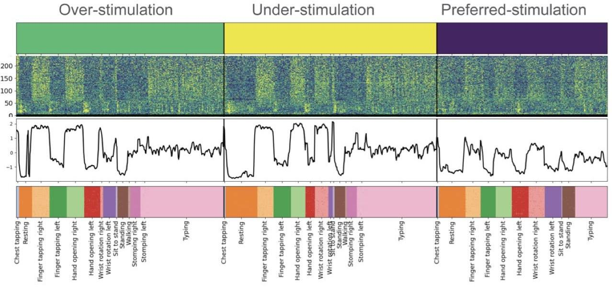
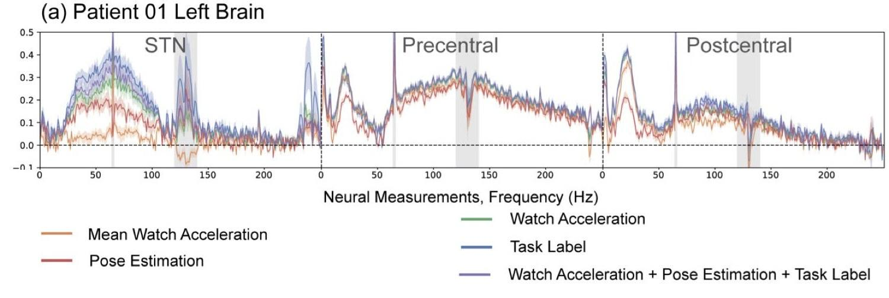
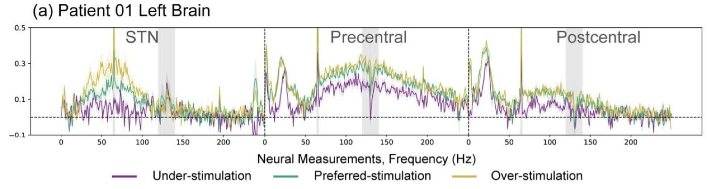
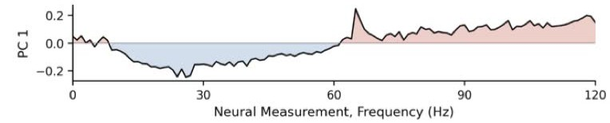

Deep Brain Stimulation Amplifies Movement-Related Neural Modulation in Parkinson’s Disease: Evidence from Multimodal Home Recordings
In short
In brain recordings made at home by two people with Parkinson’s disease, the way they moved predicted the rhythms of their brain activity, and in the person whose recordings were clearer, stronger stimulation made that link tighter.
Chapter 3 of my PhD thesis (UC Berkeley, 2025). It is unpublished thesis work: it has not appeared as a journal paper. This page introduces it; the full chapter is in the thesis PDF.
The question
Deep brain stimulation treats Parkinson’s disease with an implant that sends electrical pulses into a small structure deep in the brain, the subthalamic nucleus. It runs open-loop: the pulses do not respond to the brain or to what the person is doing, and the settings are tuned by clinical experience.
Stimulation that adapts to behavior, like the implant in the Nature Biomedical Engineering study, depends on two things: how movement shows up in the brain signals an implant can record, and how the level of stimulation changes that. I studied both with recordings made at home, where people actually move.
The recordings
Two participants had implants that can stimulate and record at once. With the home recording platform I helped build (the one behind the DBS paper), each completed six recording days. Each day they ran through movement tasks from the standard Parkinson’s motor examination (tapping fingers, opening the hand, turning the wrist, standing, walking, typing) at three stimulation levels: well below their usual setting, their usual setting, and slightly above it. The implant recorded from the stimulation target and from two cortical areas, one that drives movement and one that senses it; watches recorded both wrists, and video gave the angles of the arm and hand joints.


The approach
I used encoding models, the same tool as in my work on language in the brain: a simple linear model takes a description of what the person is doing at each moment and predicts the strength of each brain rhythm, and it is tested on a recording day it has not seen. How well it predicts measures how strongly movement is written into the brain signal. I compared four descriptions of movement: a single number for how much the wrist moves, the full pattern of wrist motion, which task is under way, and joint angles from video (and all of them together).
What I found
Movement predicts the brain signal, and the detail matters
In both participants, on both sides of the brain and at all three recording sites, movement predicted brain activity on held-out days: best in the motor cortex, weakest at the stimulation target, and much more strongly in the first participant, most likely because of recording quality. The detailed descriptions (full wrist motion, the task) did much better than the single number, so a plain “moving or not” signal leaves out much of what the brain signal carries about movement.


Stronger stimulation tightened the link
Fitting the models separately at each stimulation level, in the first participant prediction was better at the usual and higher levels than at the low one, at the stimulation target and both cortical areas, on both sides of the brain (each with its own implant). In the second participant, whose recordings were weaker, the effect was small and mostly confined to one cortical area.


What stimulation amplifies
The main pattern the models learned was a drop in beta, a rhythm (about 13 to 30 cycles a second) that is excessive in Parkinson’s and linked to holding still, with a rise in faster gamma rhythms, including a sharp peak locked to the stimulation itself. In the first participant, this pattern followed movement more closely as stimulation increased. That fits the view that stimulation works by letting movement-related signals pass through circuits that Parkinson’s has over-synchronized.


Why it matters
For adaptive stimulation, the first result says that a device listening only for “moving or not” leaves information unused, and that richer measurement of behavior could give a better estimate of a person’s state. The second suggests a target: settings that strengthen the link between movement and brain activity.
The study is small. There were two participants, the stimulation effect was clear in only one of them, and the tasks were structured and mostly seated. Whether this holds across people and in everyday life needs larger studies.
The full chapter
The methods, every comparison and test, and the background on how deep brain stimulation may work are in Chapter 3 of the thesis (PDF, from page 49). The thesis note, adapted from its introduction, says what ties the thesis together, and the DBS paper page describes the movement-responsive implant study that used the same kind of home recording.
Abstract
Parkinson’s disease (PD) is a dynamical disease: motor symptoms arise not from static lesions but from aberrant neural activity across basal ganglia and sensorimotor cortex. Deep brain stimulation (DBS) is effective but remains open-loop, with parameters tuned heuristically. Here we use a home-deployed multimodal platform to quantify how DBS amplitude modulates movement-related neural activity. Two participants implanted with bidirectional neurostimulators (Medtronic Summit RC+S) completed six recording days at home, performing a UPDRS-derived motor battery at three stimulation amplitudes (under-, preferred-, and over-stimulation). We recorded local field potentials from subthalamic nucleus and electrocorticography from precentral and postcentral gyri, alongside bilateral wrist accelerometry and video data for pose estimation. Encoding models predicted neural spectral power from behavioral features: mean acceleration, full acceleration spectrogram, task labels, pose kinematics, and a combined set. Across participants, hemispheres, and recording sites, behavioral features robustly predicted neural activity; temporally rich representations—full acceleration spectrogram and task labels—substantially outperformed coarse summaries, indicating that fine-grained movement structure is necessary for capturing behaviorally driven neural variance. In the participant with stronger model performance, higher stimulation amplitudes enhanced prediction throughout the sensorimotor network by amplifying a movement-locked spectral component characterized by beta suppression and gamma enhancement. This pattern aligns with “information lesion” accounts of DBS in which stimulation restores movement-related signaling through pathologically synchronized circuits, and provides an empirical basis for adaptive neuromodulation informed by behavioral state.
BibTeX
@phdthesis{zeng2025thesis,
title = {Principled Neuroscientific Discovery with Machine Learning},
author = {Zeng, Alicia},
school = {University of California, Berkeley},
year = {2025},
note = {Chapter 3: Deep Brain Stimulation Amplifies Movement-Related Neural
Modulation in Parkinson's Disease: Evidence from Multimodal Home Recordings}
}